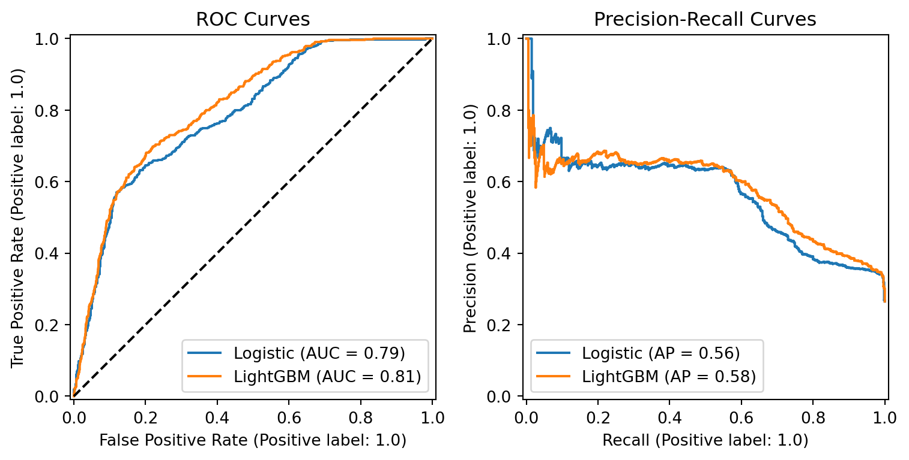

Writing a function that filters and aggregates data by card family and customer segment, based on a date and customer age range. Function is called for age 28-44 and date May 10th - Jul 16th (inclusive) below.
Code
def filter_summarize_transactions(min_age, max_age, start_date, end_date):""" Takes an age range and date range and returns a data frame with the ount, mean, and standard deviation of the transaction amounts by card family and customer segment, limited to the inputted ranges. Arguments: min_age (int): Lower bound for age range max_age (int): Upper bound for age range start_date (date): Lower bound date age range end_date (date): Upper bound date age range """# merge transaction data with card data (on Card_Number and Credit_Card_ID) and customer data (on Cust_ID) merged = transaction.merge(card, left_on='Credit_Card_ID', right_on='Card_Number').merge(customer, on='Cust_ID')# convert date to datetime type for comparison merged['Transaction_Date1'] = pd.to_datetime(merged.Transaction_Date, format='%d-%b-%y')# filter data for the given date and age range filtered = (merged.loc[(merged.Age>=min_age) & (merged.Age<=max_age)] .loc[(merged.Transaction_Date1>=start_date) & (merged.Transaction_Date1<=end_date)])# group by/aggregate for count, mean, and standard deviation of transaction values grouped = filtered.groupby(['Card_Family', 'Customer_Segment']).agg({'Transaction_Value': ['count', 'mean', 'std']}).reset_index()return grouped
Code
# displaying results of calling the function for age 28-44 and date May 10th - Jul 16th (inclusive)start_date = pd.to_datetime('10-May-2016', format='%d-%b-%Y')end_date = pd.to_datetime('16-Jul-2016', format='%d-%b-%Y')result = filter_summarize_transactions(min_age=28, max_age=44, start_date=start_date, end_date=end_date)display(result)
Card_Family
Customer_Segment
Transaction_Value
count
mean
std
0
Gold
Diamond
159
25947.490566
14295.469532
1
Gold
Gold
110
24850.972727
13211.350331
2
Gold
Platinum
60
22826.933333
14499.972092
3
Platinum
Diamond
91
23105.197802
13891.667734
4
Platinum
Gold
65
24459.815385
13725.743636
5
Platinum
Platinum
65
24620.600000
14958.461580
6
Premium
Diamond
195
23435.748718
15538.776861
7
Premium
Gold
136
23741.492647
14526.895788
8
Premium
Platinum
93
25273.182796
14595.783222
TASK 2
Building a logistic regression model using the statsmodels package to predict fraud using transaction value, value as a share of limit, age, card family, customer segment, and transaction segment; no cross validation.
Code
# merge datasetsdata = (transaction.merge(card, how='left', left_on='Credit_Card_ID', right_on='Card_Number') .merge(customer, how='left', on='Cust_ID') .merge(fraud, how='left', on='Transaction_ID'))data.Fraud_Flag = data.Fraud_Flag.fillna(0)# create value as share of limit variabledata['Limit_Share'] = data['Transaction_Value'] / data['Credit_Limit']
The results of a logistic model using transaction value, credit limit share, age, card family, customer segment, and transaction segment are displayed below.
Here are a few takeaways from this model:
There are likely other factors that should be accounted for in predicting fraud. The R-squared value of 0.1687 suggests that only about 16.87% of the variability in the fraud variable can be explained by the model.
Higher credit limit share values are associated with increased odds of fraud, by about 6% (exp(0.0595)) per unit of increase in limit share. This coefficient is statistically significant (p<0.001).
In terms of age, a statistically significant positive coefficient (p<0.1) suggests that for each additional year of age, the odds of being associated with a fradulent transaction increases by about 0.8%.
In terms of card family, compared to the gold family, platinum card transactions are associated with lower odds of being fraudulent by 96% (statistically significant with p<.001) while premium card transactions are associated with substantially higher odds of being fraudulent by 227% (p<.001).
In terms of customer segment, compared to the diamond group, gold customer transactions are associated with lower odds of being fraud by about 17% (p<.001). The platinum segment coefficient is not statistically significant, suggesting no strong difference in odds.
Finally, none of the transaction segment coefficients are statistically significiant, indicating that these segments are not helpful indicators in predicting the likelihood of fraud.
Code
# fitting logstic regression with statsmodels package# define X and yX = data[['Transaction_Value', 'Limit_Share', 'Age', 'Card_Family', 'Customer_Segment', 'Transaction_Segment']]X = pd.get_dummies(data=X, drop_first=True)y = data['Fraud_Flag']X = sm.add_constant(X)model = sm.Logit(y, X.astype(float)).fit(disp=0)model.summary()
Logit Regression Results
Dep. Variable:
Fraud_Flag
No. Observations:
10000
Model:
Logit
Df Residuals:
9978
Method:
MLE
Df Model:
21
Date:
Mon, 30 Dec 2024
Pseudo R-squ.:
0.1687
Time:
15:01:44
Log-Likelihood:
-4849.3
converged:
True
LL-Null:
-5833.6
Covariance Type:
nonrobust
LLR p-value:
0.000
coef
std err
z
P>|z|
[0.025
0.975]
const
-1.6552
0.156
-10.589
0.000
-1.962
-1.349
Transaction_Value
2.497e-06
1.76e-06
1.423
0.155
-9.43e-07
5.94e-06
Limit_Share
0.0595
0.016
3.826
0.000
0.029
0.090
Age
0.0080
0.003
2.831
0.005
0.002
0.014
Card_Family_Platinum
-3.2879
0.219
-14.995
0.000
-3.718
-2.858
Card_Family_Premium
1.1844
0.057
20.709
0.000
1.072
1.297
Customer_Segment_Gold
-0.1900
0.057
-3.357
0.001
-0.301
-0.079
Customer_Segment_Platinum
-0.0230
0.064
-0.360
0.719
-0.148
0.102
Transaction_Segment_SEG12
0.0733
0.133
0.550
0.582
-0.188
0.334
Transaction_Segment_SEG13
-0.0018
0.134
-0.014
0.989
-0.265
0.261
Transaction_Segment_SEG14
-0.0515
0.138
-0.372
0.710
-0.322
0.219
Transaction_Segment_SEG15
0.0737
0.133
0.552
0.581
-0.188
0.335
Transaction_Segment_SEG16
-0.2070
0.138
-1.501
0.133
-0.477
0.063
Transaction_Segment_SEG17
0.0573
0.135
0.426
0.670
-0.207
0.321
Transaction_Segment_SEG18
-0.1205
0.135
-0.892
0.372
-0.385
0.144
Transaction_Segment_SEG19
-0.1516
0.138
-1.096
0.273
-0.423
0.120
Transaction_Segment_SEG20
0.2471
0.132
1.870
0.061
-0.012
0.506
Transaction_Segment_SEG21
0.0630
0.135
0.467
0.641
-0.202
0.328
Transaction_Segment_SEG22
0.0428
0.135
0.316
0.752
-0.222
0.308
Transaction_Segment_SEG23
0.0966
0.133
0.729
0.466
-0.163
0.356
Transaction_Segment_SEG24
0.1300
0.134
0.969
0.333
-0.133
0.393
Transaction_Segment_SEG25
-0.0274
0.136
-0.201
0.841
-0.294
0.239
TASK 3
Implementing a lightGBM and logistic regression classification algorithm using scikit-learn to predict fraud using Transaction Value, Credit Limit, Age, and Card Family as features/predictors with 80/20 cross validation. Transactions calssified as fraud if they have a greater than 0.25 (25%) predicted probability.
For this task, I chose to implement a LightGBM classification model. The confusion matrix and classification report for the LGBM model are displayed below. The AUC score for this model is 0.812.
Below the ROC and precision-recall curves for the lgbm and logistic models are displayed.
Code
# plot ROC and precision-recall curvesimport matplotlib.pyplot as pltfrom sklearn.metrics import RocCurveDisplay, PrecisionRecallDisplayfig, (ax1, ax2) = plt.subplots(1, 2, figsize=(8, 4))# ROC curvesRocCurveDisplay.from_estimator(log_reg_model, X_test, y_test, ax=ax1, name='Logistic')RocCurveDisplay.from_estimator(lgbm_model, X_test, y_test, ax=ax1, name='LightGBM')ax1.set_title('ROC Curves')ax1.plot([0, 1], [0, 1], 'k--') # diagonal line for reference of random model# Precision-recall curvesPrecisionRecallDisplay.from_estimator(log_reg_model, X_test, y_test, ax=ax2, name='Logistic')PrecisionRecallDisplay.from_estimator(lgbm_model, X_test, y_test, ax=ax2, name='LightGBM')ax2.set_title('Precision-Recall Curves')plt.tight_layout()plt.show()

TASK 4
Model comparison
Based on my analysis, I conclude that a LightGBM model would be preferable over a logistic regression model in a production setting.
It is important to note that I assume a credit card company’s primary goal is to minimize false negatives and prioritize recall over precision. Missing actual fraudulent cases would be much more costly than falsely flagging legitimate transactions. While false alarms can inconvenience customers, this is of lower priority than overlooking fraud, which would result in financial losses and reputational damage.
My conclusion is supported by the metrics table and plots above:
The LGBM model has a substantially higher recall score (0.75) than the logistic model (0.67), meaning that the LGBM model is able to capture a significant portion of fraudulent transactions.
While the logistic model has higher precision (0.49) than the lgbm model (0.46), this difference is negligible compared to the significant difference in recall.
The precision-recall graph visualizes the difference in precision and recall between the two models. The LGBM curve is slightly higher and pulled to the right, signifying that it outperforms the logistic model.
The F1 scores are similar, with the LGBM model scoring slightly higher (.57 vs .56), suggesting both models are able to balance precision and recall.
The LGBM model also has a slightly higher AUC score (.81 vs. .79), indicating the LGBM model is more accurate at distinguishing between the two classes. The ROC curves visualize this, showing that for different classification thresholds, the LGBM model has better sensitivity and specificity on average.
Looking at the numbers more closely, the LGBM model is able to identify more true positives (396 vs 353 out of 530 total fraud cases). While the logistic model is able to limit more false positives (372 vs 463), I believe the LGBM’s better ability to identify fraud makes it the better model for this setting.
Finally, LGBM is the better model in terms of large-scale performance and scalability. A fraud classifier would have to handle a significant amount of data, with millions of users and transactions. LGBM models outperform logistic models and improve with larger sample sizes and datasets. They have superior speed and efficiency, and exhibit efficient resource utilization even as datasets grow.
To limit the false positive rate and improve customer satisfaction, I would recommend adjusting the decision threshold for classifying fraud cases, implementing additional verification steps for flagged transactions, and developing user-friendly methods for customers to verify whether flagged transactions are actually fraudulent.
Experiment recommendation
The program described could be implemented as a randomized controlled trial. To determine whether the anti-fraud program is effective, I suggest the following strategy:
Collect data over a minimum of 12-18 months to allow for enough time to detect fraudulent patterns and account for seasonal/holiday variations.
Collect all transaction information, including ID, date, merchant description, credit card information, amount, and whether the transaction was fraudulent.
Collect customer information, such as age, education level, credit score, income level, and residence zip code.
Collect information on outcome variables that indicate whether the program was effective. This includes the number of fraud cases, the company’s financial losses due to fraud, customer complaints due to falsely flagged transactions, and the operational costs associated with the anti-fraud program, such as implementation or resource utilization. The company can also consider implementing surveys to gauge program impact on customer satisfaction.
Implement a series of regression models to analyze the differences in outcomes between treatment and control groups. The outcome variables would include financial losses, number of fraudulent cases, and customer satisfaction. The independent variable with the coefficient of interest is whether the transaction was treated with the anti-fraud program, and the remainder of the variables will serve as control variables.
Use the findings from the control variables to continually improve on the anti-fraud program. For example, the model may indicate that more fraudulent transactions occur during the holiday season, in particular zip codes, or higher age ranges.
In order for the program to be deemed as effective, there would need to be a statistically significant treatment effect indicating that cases in the anti-fraud program were associated with less financial losses, less fraudulent cases, and better customer satisfaction. Because this is a randomized controlled trial, the treatment effect could be interpreted as a direct causal effect of the program. Importantly, these results should be substantial enough to outweigh the recorded operational costs of the program.